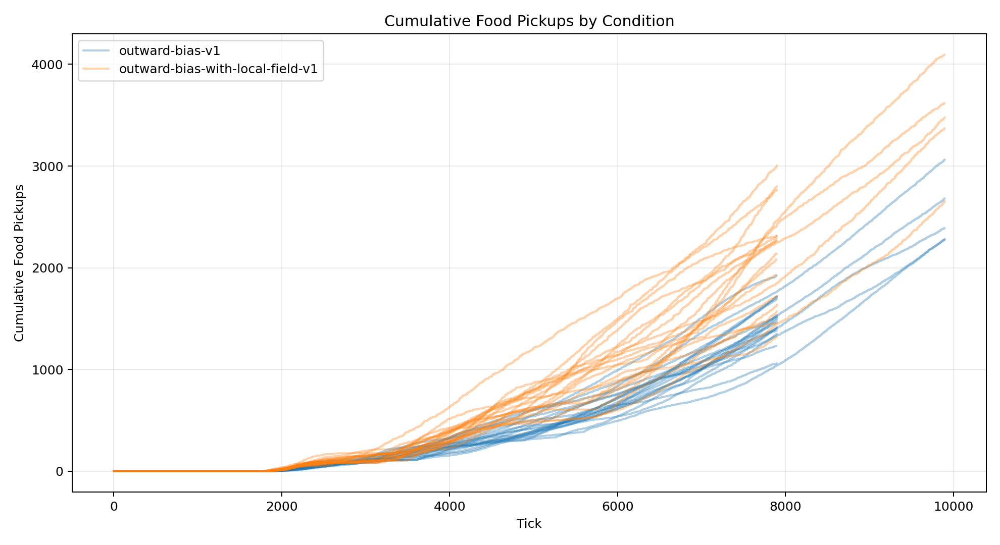
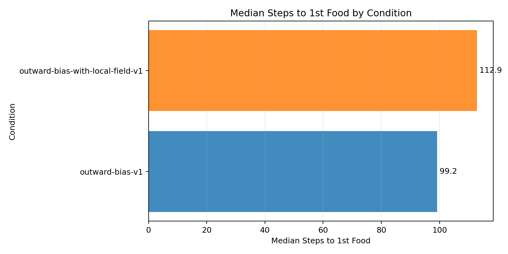
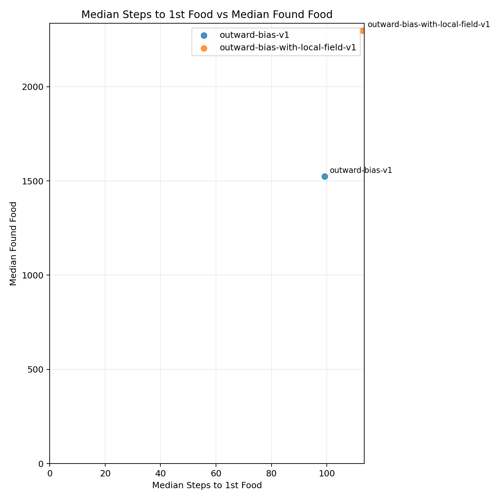
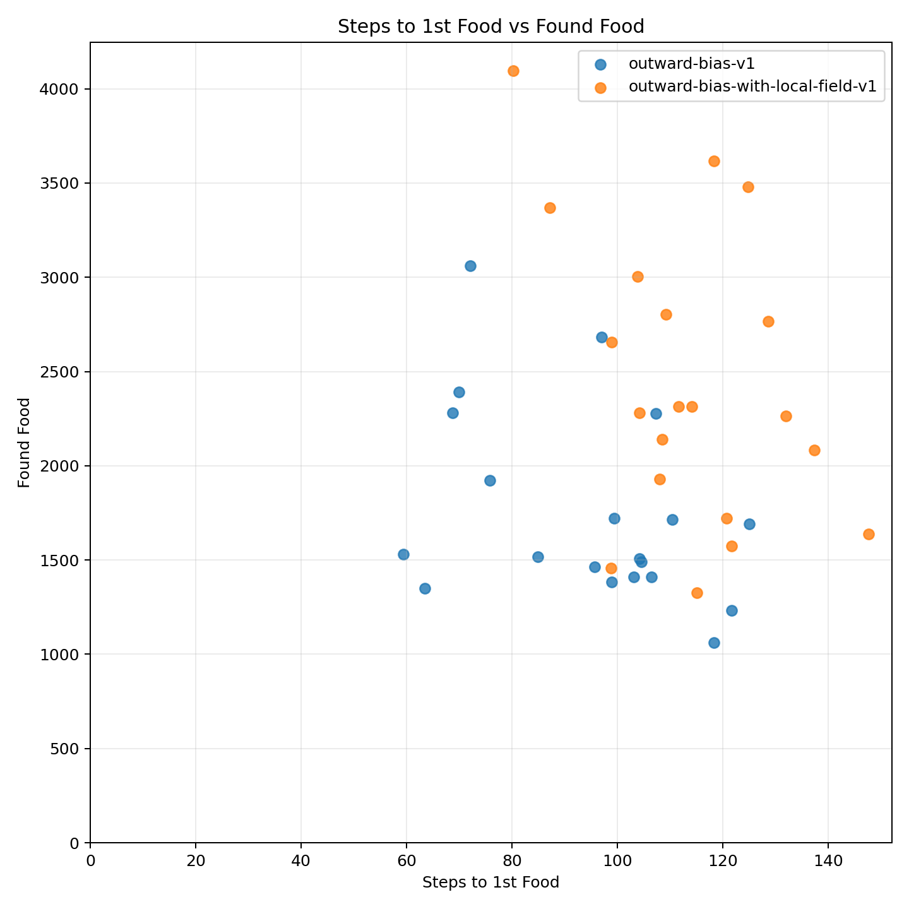
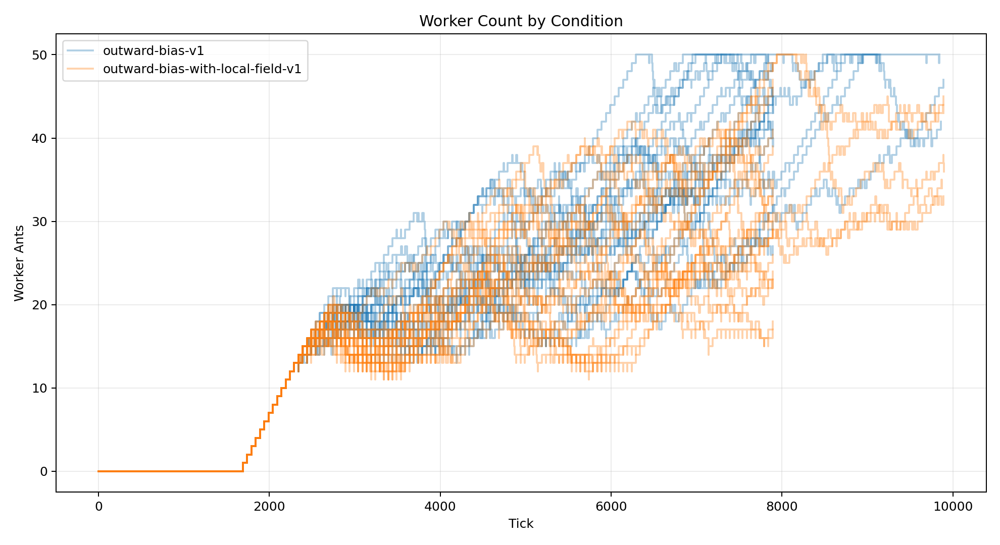

| Condition | Runs |
|---|---|
| outward-bias-v1 | 20 |
| outward-bias-with-local-field-v1 | 20 |
| Metric | Conditions | Min | Max | Average | Median | Mode |
|---|---|---|---|---|---|---|
| analysis.delivered_food | 2 | 1718.550 | 2358.250 | 2038.400 | 2038.400 | none |
| analysis.delivered_food_per_day | 2 | 19.922 | 27.396 | 23.659 | 23.659 | none |
| analysis.final_day | 2 | 85 | 85 | 85 | 85 | 85 |
| analysis.final_tick | 2 | 8400 | 8400 | 8400 | 8400 | 8400 |
| analysis.found_food | 2 | 1754.800 | 2441.450 | 2098.125 | 2098.125 | none |
| analysis.selected_move_count | 2 | 145946.350 | 172071 | 159008.675 | 159008.675 | none |
| analysis.simulation_length | 2 | 6716 | 6716 | 6716 | 6716 | 6716 |
| analysis.steps_to_nth_food.1 | 2 | 94.330 | 113.538 | 103.934 | 103.934 | none |
| analysis.steps_to_nth_food.10 | 2 | 39.016 | 41.146 | 40.081 | 40.081 | none |
| analysis.steps_to_nth_food.100 | 2 | 27.608 | 29.500 | 28.554 | 28.554 | none |
| analysis.steps_to_nth_food.101 | 2 | 23.097 | 38 | 30.549 | 30.549 | none |
| analysis.steps_to_nth_food.102 | 2 | 8.979 | 20 | 14.490 | 14.490 | none |
| analysis.steps_to_nth_food.103 | 2 | 24.833 | 41 | 32.917 | 32.917 | none |
| analysis.steps_to_nth_food.104 | 2 | 7 | 21.312 | 14.156 | 14.156 | none |
| analysis.steps_to_nth_food.105 | 2 | 2.958 | 8 | 5.479 | 5.479 | none |
| analysis.steps_to_nth_food.106 | 2 | 22.098 | 34 | 28.049 | 28.049 | none |
| analysis.steps_to_nth_food.107 | 2 | 24 | 27.212 | 25.606 | 25.606 | none |
| analysis.steps_to_nth_food.108 | 2 | 3.500 | 32 | 17.750 | 17.750 | none |
| analysis.steps_to_nth_food.109 | 2 | 23 | 24.621 | 23.811 | 23.811 | none |
| analysis.steps_to_nth_food.11 | 2 | 6.403 | 39.997 | 23.200 | 23.200 | none |
| analysis.steps_to_nth_food.110 | 2 | 7 | 33.939 | 20.470 | 20.470 | none |
| analysis.steps_to_nth_food.111 | 2 | 5.212 | 31 | 18.106 | 18.106 | none |
| analysis.steps_to_nth_food.112 | 2 | 9 | 22.848 | 15.924 | 15.924 | none |
| analysis.steps_to_nth_food.113 | 2 | 10.950 | 24 | 17.475 | 17.475 | none |
| analysis.steps_to_nth_food.114 | 2 | 8.800 | 32 | 20.400 | 20.400 | none |
| analysis.steps_to_nth_food.115 | 2 | 12 | 21.667 | 16.833 | 16.833 | none |
| analysis.steps_to_nth_food.116 | 2 | 14 | 48 | 31 | 31 | none |
| analysis.steps_to_nth_food.117 | 2 | 5.583 | 12 | 8.792 | 8.792 | none |
| analysis.steps_to_nth_food.118 | 2 | 18 | 18.633 | 18.317 | 18.317 | none |
| analysis.steps_to_nth_food.119 | 2 | 25 | 29 | 27 | 27 | none |
| analysis.steps_to_nth_food.12 | 2 | 8.144 | 40.335 | 24.240 | 24.240 | none |
| analysis.steps_to_nth_food.120 | 2 | 1 | 24.900 | 12.950 | 12.950 | none |
| analysis.steps_to_nth_food.121 | 2 | 21.817 | 30 | 25.908 | 25.908 | none |
| analysis.steps_to_nth_food.122 | 2 | 9.778 | 17 | 13.389 | 13.389 | none |
| analysis.steps_to_nth_food.123 | 2 | 15.611 | 24 | 19.806 | 19.806 | none |
| analysis.steps_to_nth_food.124 | 2 | 21.389 | 45 | 33.194 | 33.194 | none |
| analysis.steps_to_nth_food.125 | 2 | 12 | 28 | 20 | 20 | none |
| analysis.steps_to_nth_food.126 | 2 | 20 | 27.667 | 23.833 | 23.833 | none |
| analysis.steps_to_nth_food.127 | 2 | 0 | 19.375 | 9.688 | 9.688 | none |
| analysis.steps_to_nth_food.128 | 2 | 9.714 | 50 | 29.857 | 29.857 | none |
| analysis.steps_to_nth_food.129 | 2 | 15 | 83.429 | 49.214 | 49.214 | none |
| analysis.steps_to_nth_food.13 | 2 | 37.122 | 39.979 | 38.551 | 38.551 | none |
| analysis.steps_to_nth_food.130 | 2 | 3 | 26.143 | 14.571 | 14.571 | none |
| analysis.steps_to_nth_food.131 | 2 | 6.571 | 31 | 18.786 | 18.786 | none |
| analysis.steps_to_nth_food.132 | 2 | 6.400 | 9 | 7.700 | 7.700 | none |
| analysis.steps_to_nth_food.133 | 2 | 22 | 23.600 | 22.800 | 22.800 | none |
| analysis.steps_to_nth_food.134 | 1 | 0 | 0 | 0 | 0 | none |
| analysis.steps_to_nth_food.135 | 1 | 12 | 12 | 12 | 12 | none |
| analysis.steps_to_nth_food.136 | 1 | 26.667 | 26.667 | 26.667 | 26.667 | none |
| analysis.steps_to_nth_food.137 | 1 | 0 | 0 | 0 | 0 | none |
| analysis.steps_to_nth_food.138 | 1 | 25 | 25 | 25 | 25 | none |
| analysis.steps_to_nth_food.139 | 1 | 0 | 0 | 0 | 0 | none |
| analysis.steps_to_nth_food.14 | 2 | 7.763 | 40.555 | 24.159 | 24.159 | none |
| analysis.steps_to_nth_food.140 | 1 | 0 | 0 | 0 | 0 | none |
| analysis.steps_to_nth_food.141 | 1 | 33 | 33 | 33 | 33 | none |
| analysis.steps_to_nth_food.142 | 1 | 0 | 0 | 0 | 0 | none |
| analysis.steps_to_nth_food.143 | 1 | 0 | 0 | 0 | 0 | none |
| analysis.steps_to_nth_food.144 | 1 | 52.250 | 52.250 | 52.250 | 52.250 | none |
| analysis.steps_to_nth_food.145 | 1 | 0 | 0 | 0 | 0 | none |
| analysis.steps_to_nth_food.146 | 1 | 0 | 0 | 0 | 0 | none |
| analysis.steps_to_nth_food.147 | 1 | 36.250 | 36.250 | 36.250 | 36.250 | none |
| analysis.steps_to_nth_food.148 | 1 | 0 | 0 | 0 | 0 | none |
| analysis.steps_to_nth_food.149 | 1 | 0 | 0 | 0 | 0 | none |
| analysis.steps_to_nth_food.15 | 2 | 10.356 | 41.171 | 25.764 | 25.764 | none |
| analysis.steps_to_nth_food.150 | 1 | 33.500 | 33.500 | 33.500 | 33.500 | none |
| analysis.steps_to_nth_food.151 | 1 | 0 | 0 | 0 | 0 | none |
| analysis.steps_to_nth_food.152 | 1 | 0 | 0 | 0 | 0 | none |
| analysis.steps_to_nth_food.153 | 1 | 39.500 | 39.500 | 39.500 | 39.500 | none |
| analysis.steps_to_nth_food.154 | 1 | 0 | 0 | 0 | 0 | none |
| analysis.steps_to_nth_food.155 | 1 | 0 | 0 | 0 | 0 | none |
| analysis.steps_to_nth_food.156 | 1 | 55.500 | 55.500 | 55.500 | 55.500 | none |
| analysis.steps_to_nth_food.157 | 1 | 0 | 0 | 0 | 0 | none |
| analysis.steps_to_nth_food.158 | 1 | 0 | 0 | 0 | 0 | none |
| analysis.steps_to_nth_food.159 | 1 | 40 | 40 | 40 | 40 | none |
| analysis.steps_to_nth_food.16 | 2 | 35.282 | 40.197 | 37.740 | 37.740 | none |
| analysis.steps_to_nth_food.160 | 1 | 0 | 0 | 0 | 0 | none |
| analysis.steps_to_nth_food.161 | 1 | 0 | 0 | 0 | 0 | none |
| analysis.steps_to_nth_food.162 | 1 | 153 | 153 | 153 | 153 | none |
| analysis.steps_to_nth_food.163 | 1 | 0 | 0 | 0 | 0 | none |
| analysis.steps_to_nth_food.164 | 1 | 0 | 0 | 0 | 0 | none |
| analysis.steps_to_nth_food.17 | 2 | 7.851 | 44.304 | 26.077 | 26.077 | none |
| analysis.steps_to_nth_food.18 | 2 | 9.926 | 40.450 | 25.188 | 25.188 | none |
| analysis.steps_to_nth_food.19 | 2 | 30.925 | 40.823 | 35.874 | 35.874 | none |
| analysis.steps_to_nth_food.2 | 2 | 1.622 | 38.781 | 20.202 | 20.202 | none |
| analysis.steps_to_nth_food.20 | 2 | 10.936 | 41.556 | 26.246 | 26.246 | none |
| analysis.steps_to_nth_food.21 | 2 | 9.165 | 38.290 | 23.727 | 23.727 | none |
| analysis.steps_to_nth_food.22 | 2 | 27.664 | 38.989 | 33.326 | 33.326 | none |
| analysis.steps_to_nth_food.23 | 2 | 13.061 | 35.989 | 24.525 | 24.525 | none |
| analysis.steps_to_nth_food.24 | 2 | 11.238 | 40.171 | 25.705 | 25.705 | none |
| analysis.steps_to_nth_food.25 | 2 | 28.638 | 38.602 | 33.620 | 33.620 | none |
| analysis.steps_to_nth_food.26 | 2 | 11.066 | 40.381 | 25.724 | 25.724 | none |
| analysis.steps_to_nth_food.27 | 2 | 14.708 | 37.740 | 26.224 | 26.224 | none |
| analysis.steps_to_nth_food.28 | 2 | 29.565 | 36.466 | 33.015 | 33.015 | none |
| analysis.steps_to_nth_food.29 | 2 | 12.492 | 38.126 | 25.309 | 25.309 | none |
| analysis.steps_to_nth_food.3 | 2 | 1.786 | 38.796 | 20.291 | 20.291 | none |
| analysis.steps_to_nth_food.30 | 2 | 13.776 | 37.019 | 25.398 | 25.398 | none |
| analysis.steps_to_nth_food.31 | 2 | 24.463 | 39.638 | 32.051 | 32.051 | none |
| analysis.steps_to_nth_food.32 | 2 | 12.360 | 38.457 | 25.409 | 25.409 | none |
| analysis.steps_to_nth_food.33 | 2 | 12.941 | 37.826 | 25.383 | 25.383 | none |
| analysis.steps_to_nth_food.34 | 2 | 25.022 | 38.686 | 31.854 | 31.854 | none |
| analysis.steps_to_nth_food.35 | 2 | 11.937 | 36.073 | 24.005 | 24.005 | none |
| analysis.steps_to_nth_food.36 | 2 | 14.958 | 38.437 | 26.697 | 26.697 | none |
| analysis.steps_to_nth_food.37 | 2 | 26.012 | 38.818 | 32.415 | 32.415 | none |
| analysis.steps_to_nth_food.38 | 2 | 11.467 | 37.247 | 24.357 | 24.357 | none |
| analysis.steps_to_nth_food.39 | 2 | 18.021 | 35.609 | 26.815 | 26.815 | none |
| analysis.steps_to_nth_food.4 | 2 | 38.827 | 43.456 | 41.141 | 41.141 | none |
| analysis.steps_to_nth_food.40 | 2 | 25.800 | 36.434 | 31.117 | 31.117 | none |
| analysis.steps_to_nth_food.41 | 2 | 10.992 | 39.278 | 25.135 | 25.135 | none |
| analysis.steps_to_nth_food.42 | 2 | 14.269 | 39.272 | 26.771 | 26.771 | none |
| analysis.steps_to_nth_food.43 | 2 | 22.664 | 37.540 | 30.102 | 30.102 | none |
| analysis.steps_to_nth_food.44 | 2 | 11.126 | 37.948 | 24.537 | 24.537 | none |
| analysis.steps_to_nth_food.45 | 2 | 18.604 | 37.868 | 28.236 | 28.236 | none |
| analysis.steps_to_nth_food.46 | 2 | 22.744 | 38.420 | 30.582 | 30.582 | none |
| analysis.steps_to_nth_food.47 | 2 | 15.206 | 34.785 | 24.996 | 24.996 | none |
| analysis.steps_to_nth_food.48 | 2 | 18.564 | 39.128 | 28.846 | 28.846 | none |
| analysis.steps_to_nth_food.49 | 2 | 18.143 | 36.015 | 27.079 | 27.079 | none |
| analysis.steps_to_nth_food.5 | 2 | 3.494 | 40.643 | 22.068 | 22.068 | none |
| analysis.steps_to_nth_food.50 | 2 | 13.746 | 36.962 | 25.354 | 25.354 | none |
| analysis.steps_to_nth_food.51 | 2 | 17.113 | 30.549 | 23.831 | 23.831 | none |
| analysis.steps_to_nth_food.52 | 2 | 18.473 | 40.053 | 29.263 | 29.263 | none |
| analysis.steps_to_nth_food.53 | 2 | 16.352 | 36.558 | 26.455 | 26.455 | none |
| analysis.steps_to_nth_food.54 | 2 | 17.055 | 52.642 | 34.848 | 34.848 | none |
| analysis.steps_to_nth_food.55 | 2 | 19.652 | 43.423 | 31.538 | 31.538 | none |
| analysis.steps_to_nth_food.56 | 2 | 13.114 | 36.074 | 24.594 | 24.594 | none |
| analysis.steps_to_nth_food.57 | 2 | 19.723 | 33.015 | 26.369 | 26.369 | none |
| analysis.steps_to_nth_food.58 | 2 | 16.041 | 25.742 | 20.891 | 20.891 | none |
| analysis.steps_to_nth_food.59 | 2 | 20.407 | 30.775 | 25.591 | 25.591 | none |
| analysis.steps_to_nth_food.6 | 2 | 5.443 | 42.655 | 24.049 | 24.049 | none |
| analysis.steps_to_nth_food.60 | 2 | 20.844 | 33.006 | 26.925 | 26.925 | none |
| analysis.steps_to_nth_food.61 | 2 | 14.228 | 32.081 | 23.154 | 23.154 | none |
| analysis.steps_to_nth_food.62 | 2 | 18.009 | 33.543 | 25.776 | 25.776 | none |
| analysis.steps_to_nth_food.63 | 2 | 19.272 | 25.919 | 22.596 | 22.596 | none |
| analysis.steps_to_nth_food.64 | 2 | 17.658 | 28.022 | 22.840 | 22.840 | none |
| analysis.steps_to_nth_food.65 | 2 | 20.959 | 33.141 | 27.050 | 27.050 | none |
| analysis.steps_to_nth_food.66 | 2 | 23.035 | 32.802 | 27.918 | 27.918 | none |
| analysis.steps_to_nth_food.67 | 2 | 21.621 | 37.174 | 29.398 | 29.398 | none |
| analysis.steps_to_nth_food.68 | 2 | 14.506 | 28.963 | 21.734 | 21.734 | none |
| analysis.steps_to_nth_food.69 | 2 | 19.139 | 24.242 | 21.691 | 21.691 | none |
| analysis.steps_to_nth_food.7 | 2 | 39.718 | 41.074 | 40.396 | 40.396 | none |
| analysis.steps_to_nth_food.70 | 2 | 15.534 | 25.636 | 20.585 | 20.585 | none |
| analysis.steps_to_nth_food.71 | 2 | 21.002 | 25.375 | 23.188 | 23.188 | none |
| analysis.steps_to_nth_food.72 | 2 | 24.813 | 28.069 | 26.441 | 26.441 | none |
| analysis.steps_to_nth_food.73 | 2 | 19.742 | 34.097 | 26.919 | 26.919 | none |
| analysis.steps_to_nth_food.74 | 2 | 17.380 | 36.403 | 26.892 | 26.892 | none |
| analysis.steps_to_nth_food.75 | 2 | 19.287 | 31.333 | 25.310 | 25.310 | none |
| analysis.steps_to_nth_food.76 | 2 | 16.216 | 35.857 | 26.037 | 26.037 | none |
| analysis.steps_to_nth_food.77 | 2 | 17.278 | 25.314 | 21.296 | 21.296 | none |
| analysis.steps_to_nth_food.78 | 2 | 23.195 | 43.414 | 33.305 | 33.305 | none |
| analysis.steps_to_nth_food.79 | 2 | 12.329 | 27.786 | 20.057 | 20.057 | none |
| analysis.steps_to_nth_food.8 | 2 | 5.069 | 40.361 | 22.715 | 22.715 | none |
| analysis.steps_to_nth_food.80 | 2 | 21.095 | 40.690 | 30.893 | 30.893 | none |
| analysis.steps_to_nth_food.81 | 2 | 26.083 | 30.357 | 28.220 | 28.220 | none |
| analysis.steps_to_nth_food.82 | 2 | 10.777 | 31.694 | 21.236 | 21.236 | none |
| analysis.steps_to_nth_food.83 | 2 | 11.812 | 21.133 | 16.473 | 16.473 | none |
| analysis.steps_to_nth_food.84 | 2 | 26.526 | 29 | 27.763 | 27.763 | none |
| analysis.steps_to_nth_food.85 | 2 | 15.105 | 37.867 | 26.486 | 26.486 | none |
| analysis.steps_to_nth_food.86 | 2 | 15.916 | 33.400 | 24.658 | 24.658 | none |
| analysis.steps_to_nth_food.87 | 2 | 27.638 | 28 | 27.819 | 27.819 | none |
| analysis.steps_to_nth_food.88 | 2 | 12.734 | 45 | 28.867 | 28.867 | none |
| analysis.steps_to_nth_food.89 | 2 | 13.295 | 24 | 18.647 | 18.647 | none |
| analysis.steps_to_nth_food.9 | 2 | 5.801 | 38.900 | 22.350 | 22.350 | none |
| analysis.steps_to_nth_food.90 | 2 | 12.767 | 34.556 | 23.661 | 23.661 | none |
| analysis.steps_to_nth_food.91 | 2 | 11.361 | 31.556 | 21.458 | 21.458 | none |
| analysis.steps_to_nth_food.92 | 2 | 19.589 | 49.444 | 34.517 | 34.517 | none |
| analysis.steps_to_nth_food.93 | 2 | 15.569 | 30.500 | 23.034 | 23.034 | none |
| analysis.steps_to_nth_food.94 | 2 | 38.773 | 46.500 | 42.636 | 42.636 | none |
| analysis.steps_to_nth_food.95 | 2 | 11.003 | 28 | 19.501 | 19.501 | none |
| analysis.steps_to_nth_food.96 | 2 | 17.562 | 37 | 27.281 | 27.281 | none |
| analysis.steps_to_nth_food.97 | 2 | 16.011 | 26 | 21.006 | 21.006 | none |
| analysis.steps_to_nth_food.98 | 2 | 12.703 | 16.500 | 14.602 | 14.602 | none |
| analysis.steps_to_nth_food.99 | 2 | 6.333 | 25.500 | 15.917 | 15.917 | none |
| analysis.steps_to_nth_queen.1 | 2 | 29.497 | 40.093 | 34.795 | 34.795 | none |
| analysis.steps_to_nth_queen.10 | 2 | 32.639 | 47.928 | 40.284 | 40.284 | none |
| analysis.steps_to_nth_queen.100 | 1 | 26.500 | 26.500 | 26.500 | 26.500 | none |
| analysis.steps_to_nth_queen.101 | 1 | 37.500 | 37.500 | 37.500 | 37.500 | none |
| analysis.steps_to_nth_queen.102 | 1 | 20 | 20 | 20 | 20 | none |
| analysis.steps_to_nth_queen.103 | 1 | 33 | 33 | 33 | 33 | none |
| analysis.steps_to_nth_queen.104 | 1 | 7 | 7 | 7 | 7 | none |
| analysis.steps_to_nth_queen.105 | 1 | 10 | 10 | 10 | 10 | none |
| analysis.steps_to_nth_queen.106 | 1 | 34 | 34 | 34 | 34 | none |
| analysis.steps_to_nth_queen.107 | 1 | 20 | 20 | 20 | 20 | none |
| analysis.steps_to_nth_queen.108 | 1 | 32 | 32 | 32 | 32 | none |
| analysis.steps_to_nth_queen.109 | 1 | 24 | 24 | 24 | 24 | none |
| analysis.steps_to_nth_queen.11 | 2 | 32.765 | 42.600 | 37.682 | 37.682 | none |
| analysis.steps_to_nth_queen.110 | 1 | 3 | 3 | 3 | 3 | none |
| analysis.steps_to_nth_queen.111 | 1 | 21 | 21 | 21 | 21 | none |
| analysis.steps_to_nth_queen.112 | 1 | 7 | 7 | 7 | 7 | none |
| analysis.steps_to_nth_queen.113 | 1 | 26 | 26 | 26 | 26 | none |
| analysis.steps_to_nth_queen.114 | 1 | 160 | 160 | 160 | 160 | none |
| analysis.steps_to_nth_queen.115 | 1 | 8 | 8 | 8 | 8 | none |
| analysis.steps_to_nth_queen.116 | 1 | 40 | 40 | 40 | 40 | none |
| analysis.steps_to_nth_queen.117 | 1 | 10 | 10 | 10 | 10 | none |
| analysis.steps_to_nth_queen.118 | 1 | 20 | 20 | 20 | 20 | none |
| analysis.steps_to_nth_queen.119 | 1 | 23 | 23 | 23 | 23 | none |
| analysis.steps_to_nth_queen.12 | 2 | 34.381 | 45.321 | 39.851 | 39.851 | none |
| analysis.steps_to_nth_queen.120 | 1 | 3 | 3 | 3 | 3 | none |
| analysis.steps_to_nth_queen.121 | 1 | 36 | 36 | 36 | 36 | none |
| analysis.steps_to_nth_queen.122 | 1 | 17 | 17 | 17 | 17 | none |
| analysis.steps_to_nth_queen.123 | 1 | 18 | 18 | 18 | 18 | none |
| analysis.steps_to_nth_queen.124 | 1 | 43 | 43 | 43 | 43 | none |
| analysis.steps_to_nth_queen.125 | 1 | 24 | 24 | 24 | 24 | none |
| analysis.steps_to_nth_queen.126 | 1 | 22 | 22 | 22 | 22 | none |
| analysis.steps_to_nth_queen.127 | 1 | 2 | 2 | 2 | 2 | none |
| analysis.steps_to_nth_queen.128 | 1 | 42 | 42 | 42 | 42 | none |
| analysis.steps_to_nth_queen.129 | 1 | 17 | 17 | 17 | 17 | none |
| analysis.steps_to_nth_queen.13 | 2 | 33.707 | 46.198 | 39.953 | 39.953 | none |
| analysis.steps_to_nth_queen.130 | 1 | 3 | 3 | 3 | 3 | none |
| analysis.steps_to_nth_queen.131 | 1 | 27 | 27 | 27 | 27 | none |
| analysis.steps_to_nth_queen.132 | 1 | 13 | 13 | 13 | 13 | none |
| analysis.steps_to_nth_queen.133 | 1 | 21 | 21 | 21 | 21 | none |
| analysis.steps_to_nth_queen.14 | 2 | 33.923 | 44.272 | 39.098 | 39.098 | none |
| analysis.steps_to_nth_queen.15 | 2 | 34.111 | 44.937 | 39.524 | 39.524 | none |
| analysis.steps_to_nth_queen.16 | 2 | 34.636 | 47.378 | 41.007 | 41.007 | none |
| analysis.steps_to_nth_queen.17 | 2 | 35.653 | 47.701 | 41.677 | 41.677 | none |
| analysis.steps_to_nth_queen.18 | 2 | 36.224 | 44.373 | 40.298 | 40.298 | none |
| analysis.steps_to_nth_queen.19 | 2 | 36.356 | 49.138 | 42.747 | 42.747 | none |
| analysis.steps_to_nth_queen.2 | 2 | 29.562 | 38.440 | 34.001 | 34.001 | none |
| analysis.steps_to_nth_queen.20 | 2 | 35.733 | 45.356 | 40.544 | 40.544 | none |
| analysis.steps_to_nth_queen.21 | 2 | 34.654 | 51.711 | 43.183 | 43.183 | none |
| analysis.steps_to_nth_queen.22 | 2 | 32.926 | 43.027 | 37.976 | 37.976 | none |
| analysis.steps_to_nth_queen.23 | 2 | 34.419 | 50.192 | 42.306 | 42.306 | none |
| analysis.steps_to_nth_queen.24 | 2 | 35.284 | 50.022 | 42.653 | 42.653 | none |
| analysis.steps_to_nth_queen.25 | 2 | 31.495 | 41.086 | 36.290 | 36.290 | none |
| analysis.steps_to_nth_queen.26 | 2 | 34.027 | 45.776 | 39.901 | 39.901 | none |
| analysis.steps_to_nth_queen.27 | 2 | 35.178 | 46.983 | 41.080 | 41.080 | none |
| analysis.steps_to_nth_queen.28 | 2 | 34.720 | 43.292 | 39.006 | 39.006 | none |
| analysis.steps_to_nth_queen.29 | 2 | 34.074 | 52.568 | 43.321 | 43.321 | none |
| analysis.steps_to_nth_queen.3 | 2 | 30.417 | 41.138 | 35.777 | 35.777 | none |
| analysis.steps_to_nth_queen.30 | 2 | 35.493 | 38.571 | 37.032 | 37.032 | none |
| analysis.steps_to_nth_queen.31 | 2 | 34.857 | 42.414 | 38.635 | 38.635 | none |
| analysis.steps_to_nth_queen.32 | 2 | 33.830 | 39.726 | 36.778 | 36.778 | none |
| analysis.steps_to_nth_queen.33 | 2 | 35.588 | 43.228 | 39.408 | 39.408 | none |
| analysis.steps_to_nth_queen.34 | 2 | 35.703 | 55.884 | 45.793 | 45.793 | none |
| analysis.steps_to_nth_queen.35 | 2 | 33.276 | 43.737 | 38.507 | 38.507 | none |
| analysis.steps_to_nth_queen.36 | 2 | 34.205 | 39.124 | 36.665 | 36.665 | none |
| analysis.steps_to_nth_queen.37 | 2 | 34.977 | 45.833 | 40.405 | 40.405 | none |
| analysis.steps_to_nth_queen.38 | 2 | 36.357 | 51.633 | 43.995 | 43.995 | none |
| analysis.steps_to_nth_queen.39 | 2 | 34.126 | 43.617 | 38.872 | 38.872 | none |
| analysis.steps_to_nth_queen.4 | 2 | 33.161 | 44.215 | 38.688 | 38.688 | none |
| analysis.steps_to_nth_queen.40 | 2 | 32.593 | 48.017 | 40.305 | 40.305 | none |
| analysis.steps_to_nth_queen.41 | 2 | 32.844 | 35.700 | 34.272 | 34.272 | none |
| analysis.steps_to_nth_queen.42 | 2 | 32.962 | 43.067 | 38.014 | 38.014 | none |
| analysis.steps_to_nth_queen.43 | 2 | 31.023 | 45.222 | 38.123 | 38.123 | none |
| analysis.steps_to_nth_queen.44 | 2 | 35.225 | 109.333 | 72.279 | 72.279 | none |
| analysis.steps_to_nth_queen.45 | 2 | 38.112 | 64.833 | 51.473 | 51.473 | none |
| analysis.steps_to_nth_queen.46 | 2 | 35.403 | 41.800 | 38.602 | 38.602 | none |
| analysis.steps_to_nth_queen.47 | 2 | 35.670 | 46.833 | 41.252 | 41.252 | none |
| analysis.steps_to_nth_queen.48 | 2 | 31.750 | 40.096 | 35.923 | 35.923 | none |
| analysis.steps_to_nth_queen.49 | 2 | 25 | 33.868 | 29.434 | 29.434 | none |
| analysis.steps_to_nth_queen.5 | 2 | 31.765 | 43.883 | 37.824 | 37.824 | none |
| analysis.steps_to_nth_queen.50 | 2 | 31.250 | 36.180 | 33.715 | 33.715 | none |
| analysis.steps_to_nth_queen.51 | 2 | 29.794 | 42.750 | 36.272 | 36.272 | none |
| analysis.steps_to_nth_queen.52 | 2 | 28 | 39.030 | 33.515 | 33.515 | none |
| analysis.steps_to_nth_queen.53 | 2 | 33.527 | 46 | 39.763 | 39.763 | none |
| analysis.steps_to_nth_queen.54 | 2 | 36.715 | 59.250 | 47.983 | 47.983 | none |
| analysis.steps_to_nth_queen.55 | 2 | 41.610 | 50 | 45.805 | 45.805 | none |
| analysis.steps_to_nth_queen.56 | 2 | 33.013 | 72 | 52.507 | 52.507 | none |
| analysis.steps_to_nth_queen.57 | 1 | 29.747 | 29.747 | 29.747 | 29.747 | none |
| analysis.steps_to_nth_queen.58 | 1 | 25.455 | 25.455 | 25.455 | 25.455 | none |
| analysis.steps_to_nth_queen.59 | 1 | 30.401 | 30.401 | 30.401 | 30.401 | none |
| analysis.steps_to_nth_queen.6 | 2 | 30.952 | 48.191 | 39.571 | 39.571 | none |
| analysis.steps_to_nth_queen.60 | 1 | 33.259 | 33.259 | 33.259 | 33.259 | none |
| analysis.steps_to_nth_queen.61 | 1 | 31.662 | 31.662 | 31.662 | 31.662 | none |
| analysis.steps_to_nth_queen.62 | 1 | 32.567 | 32.567 | 32.567 | 32.567 | none |
| analysis.steps_to_nth_queen.63 | 1 | 26.667 | 26.667 | 26.667 | 26.667 | none |
| analysis.steps_to_nth_queen.64 | 1 | 29.870 | 29.870 | 29.870 | 29.870 | none |
| analysis.steps_to_nth_queen.65 | 1 | 32.491 | 32.491 | 32.491 | 32.491 | none |
| analysis.steps_to_nth_queen.66 | 1 | 31.682 | 31.682 | 31.682 | 31.682 | none |
| analysis.steps_to_nth_queen.67 | 1 | 38.642 | 38.642 | 38.642 | 38.642 | none |
| analysis.steps_to_nth_queen.68 | 1 | 27.470 | 27.470 | 27.470 | 27.470 | none |
| analysis.steps_to_nth_queen.69 | 1 | 24.640 | 24.640 | 24.640 | 24.640 | none |
| analysis.steps_to_nth_queen.7 | 2 | 32.203 | 44.391 | 38.297 | 38.297 | none |
| analysis.steps_to_nth_queen.70 | 1 | 24.955 | 24.955 | 24.955 | 24.955 | none |
| analysis.steps_to_nth_queen.71 | 1 | 24.887 | 24.887 | 24.887 | 24.887 | none |
| analysis.steps_to_nth_queen.72 | 1 | 28.042 | 28.042 | 28.042 | 28.042 | none |
| analysis.steps_to_nth_queen.73 | 1 | 35.375 | 35.375 | 35.375 | 35.375 | none |
| analysis.steps_to_nth_queen.74 | 1 | 38.903 | 38.903 | 38.903 | 38.903 | none |
| analysis.steps_to_nth_queen.75 | 1 | 28.500 | 28.500 | 28.500 | 28.500 | none |
| analysis.steps_to_nth_queen.76 | 1 | 36.671 | 36.671 | 36.671 | 36.671 | none |
| analysis.steps_to_nth_queen.77 | 1 | 28.257 | 28.257 | 28.257 | 28.257 | none |
| analysis.steps_to_nth_queen.78 | 1 | 39.964 | 39.964 | 39.964 | 39.964 | none |
| analysis.steps_to_nth_queen.79 | 1 | 28.500 | 28.500 | 28.500 | 28.500 | none |
| analysis.steps_to_nth_queen.8 | 2 | 32.179 | 45.717 | 38.948 | 38.948 | none |
| analysis.steps_to_nth_queen.80 | 1 | 37.048 | 37.048 | 37.048 | 37.048 | none |
| analysis.steps_to_nth_queen.81 | 1 | 34.048 | 34.048 | 34.048 | 34.048 | none |
| analysis.steps_to_nth_queen.82 | 1 | 26.233 | 26.233 | 26.233 | 26.233 | none |
| analysis.steps_to_nth_queen.83 | 1 | 21.600 | 21.600 | 21.600 | 21.600 | none |
| analysis.steps_to_nth_queen.84 | 1 | 30.633 | 30.633 | 30.633 | 30.633 | none |
| analysis.steps_to_nth_queen.85 | 1 | 37.600 | 37.600 | 37.600 | 37.600 | none |
| analysis.steps_to_nth_queen.86 | 1 | 33.533 | 33.533 | 33.533 | 33.533 | none |
| analysis.steps_to_nth_queen.87 | 1 | 24.800 | 24.800 | 24.800 | 24.800 | none |
| analysis.steps_to_nth_queen.88 | 1 | 43.167 | 43.167 | 43.167 | 43.167 | none |
| analysis.steps_to_nth_queen.89 | 1 | 26 | 26 | 26 | 26 | none |
| analysis.steps_to_nth_queen.9 | 2 | 32.798 | 46.063 | 39.431 | 39.431 | none |
| analysis.steps_to_nth_queen.90 | 1 | 37.444 | 37.444 | 37.444 | 37.444 | none |
| analysis.steps_to_nth_queen.91 | 1 | 30 | 30 | 30 | 30 | none |
| analysis.steps_to_nth_queen.92 | 1 | 52.333 | 52.333 | 52.333 | 52.333 | none |
| analysis.steps_to_nth_queen.93 | 1 | 37.667 | 37.667 | 37.667 | 37.667 | none |
| analysis.steps_to_nth_queen.94 | 1 | 50 | 50 | 50 | 50 | none |
| analysis.steps_to_nth_queen.95 | 1 | 28 | 28 | 28 | 28 | none |
| analysis.steps_to_nth_queen.96 | 1 | 39 | 39 | 39 | 39 | none |
| analysis.steps_to_nth_queen.97 | 1 | 25 | 25 | 25 | 25 | none |
| analysis.steps_to_nth_queen.98 | 1 | 22.500 | 22.500 | 22.500 | 22.500 | none |
| analysis.steps_to_nth_queen.99 | 1 | 25.500 | 25.500 | 25.500 | 25.500 | none |
| day | 2 | 85 | 85 | 85 | 85 | 85 |
| delivered_food | 2 | 1718.550 | 2358.250 | 2038.400 | 2038.400 | none |
| egg_hatched | 2 | 128.500 | 134.550 | 131.525 | 131.525 | none |
| egg_laid | 2 | 134.800 | 151.850 | 143.325 | 143.325 | none |
| eggs | 2 | 6.300 | 17.300 | 11.800 | 11.800 | none |
| found_food | 2 | 1754.800 | 2441.450 | 2098.125 | 2098.125 | none |
| players | 2 | 0 | 0 | 0 | 0 | 0 |
| queens | 2 | 1 | 1 | 1 | 1 | 1 |
| randomized_seed | 2 | 1777300374290.500 | 1777305051848.150 | 1777302713069.325 | 1777302713069.325 | none |
| simulation_length | 2 | 6716 | 6716 | 6716 | 6716 | 6716 |
| start_tick | 2 | 1684 | 1684 | 1684 | 1684 | 1684 |
| stop_reason.MaxDay | 2 | 85 | 85 | 85 | 85 | 85 |
| tick | 2 | 8400 | 8400 | 8400 | 8400 | 8400 |
| workers | 2 | 32.700 | 43.650 | 38.175 | 38.175 | none |
| world.height | 2 | 274 | 274 | 274 | 274 | 274 |
| world.width | 2 | 160 | 160 | 160 | 160 | 160 |




